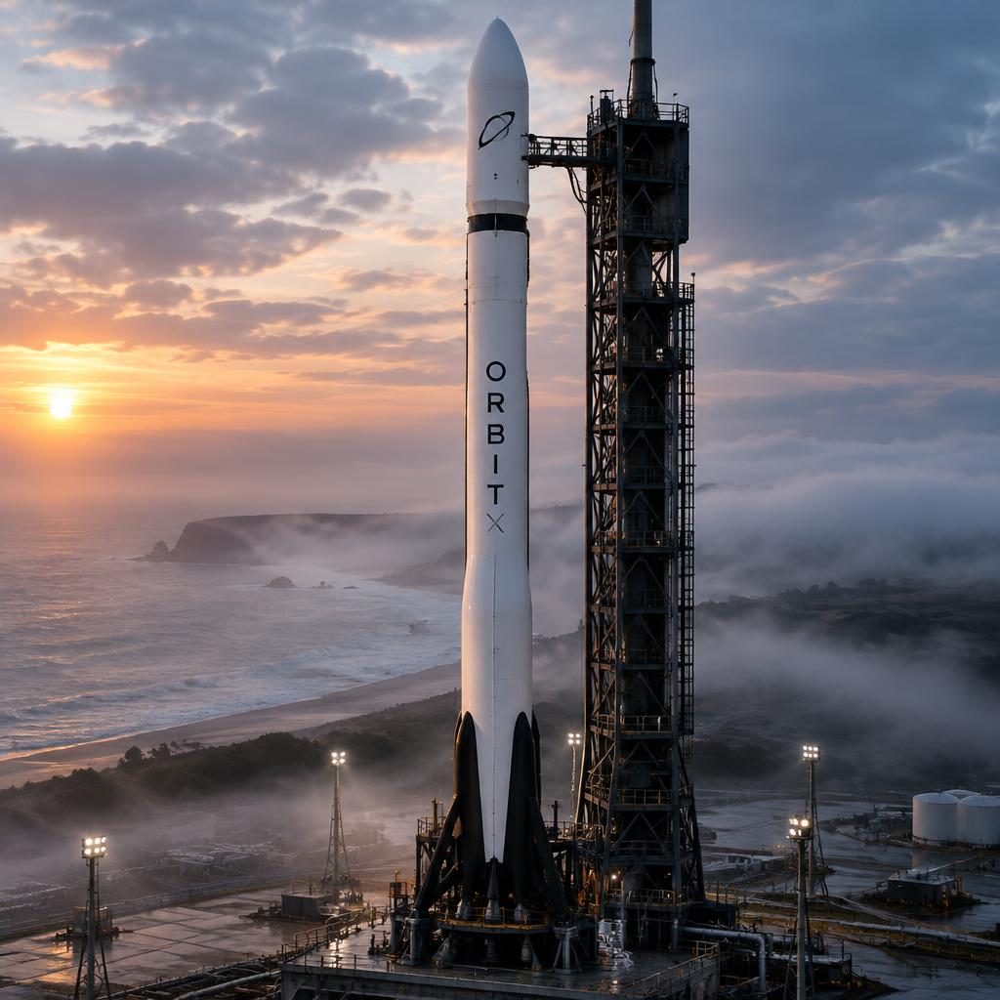
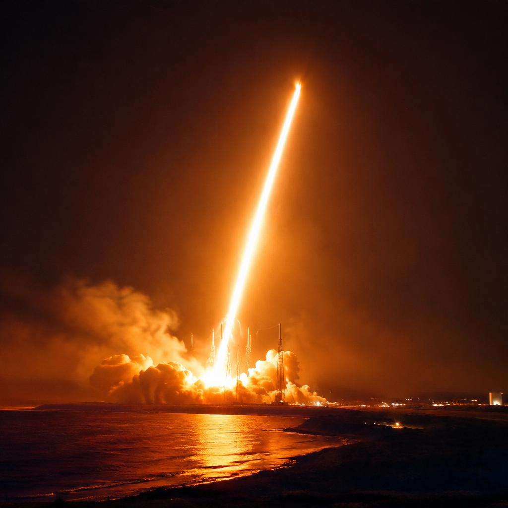
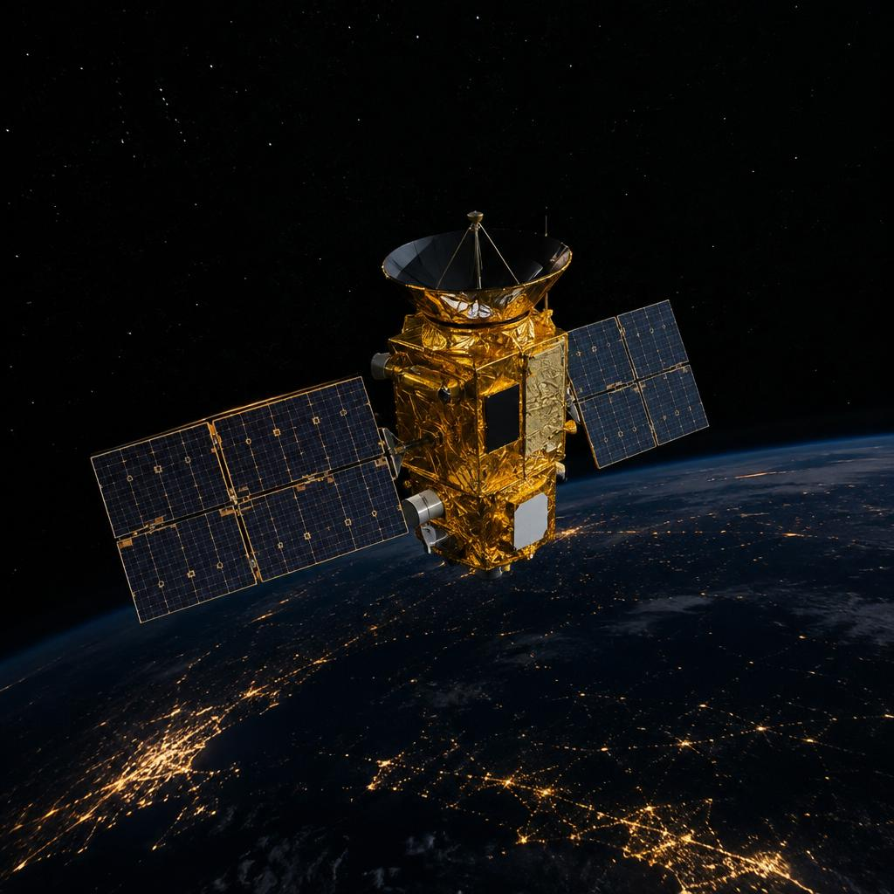

Launch · Mission 1
Pioneer-1
OrbitX One's first orbital flight: a single reusable booster, one weather satellite, and eleven minutes that proved the whole company.

The mission in one sentence
Pioneer-1 had one job: prove that a rocket built in our own hangar could put a real payload in orbit and bring its first stage back in one piece. The customer was a weather-imaging satellite, WX-Sat 1 — a deliberately simple spacecraft for a first flight, because a demo rocket should never risk anything complicated.
The target was a 560 km sun-synchronous orbit. “Sun-synchronous” means the orbit is tilted so the satellite crosses every point on Earth at the same local solar time — essential for weather cameras, because their images need consistent lighting every single day. Reaching it demands a launch almost straight south over the ocean, which is why the mission had a 12-minute window that repeated once per day: miss it, and the geometry is wrong until tomorrow.

T−0 — a night launch
The countdown reached zero at 02:41 local time. At night you can actually see the physics: the nine VX-Merlin engines light in staggered pairs over three seconds, each one checked by the flight computer before the next is allowed to ignite, and the pad floods with light brighter than sunrise. The hold-downs release only after every engine reports full thrust — if one had lagged, the computer would have shut everything down with the rocket still standing.
The first minute of flight is the loudest thing a rocket ever does. It climbs almost vertically to escape the thickest air quickly, then rolls over downrange, trading altitude for the sideways speed that orbit requires — about 7.6 km per second by the end.

Two minutes in — separation
At T+2:28, with the sky already black and the engines starved of air to push against, the first stage shut down and the second stage ignited a fraction of a second later. Stage separation is mechanical, not explosive drama: three pneumatic pushers shove the stages apart gently, because a hard jolt could upset the guidance.
From here the mission splits into two flights happening at once. The second stage kept burning for six more minutes to finish orbit insertion. The booster, meanwhile, flipped end-for-end using cold-gas thrusters and began its own descent — a controlled fall from 100 km through the same atmosphere the rocket just escaped.

T+8:47 — the booster lands itself
The landing is the part that looks impossible and is actually just arithmetic. Falling supersonic, the booster uses grid fins — four lattice fins on the top — as aerodynamic surfaces to steer, exactly like a dart's flights. Below 3 km it relights one engine for the final burn, kills its velocity to zero, and touches down on four legs on the concrete pad. Total flight time from liftoff to landing: 8 minutes 47 seconds.
Landing accuracy matters more than it sounds: the pad is barely 60 metres across, and the booster has no steering once the engine stops. Pioneer-1 landed 1.8 metres from centre — close enough that engineers simply drove a truck out and lowered the legs' stabilisers.

T+11:05 — deployment and first light
While the booster was still falling, the second stage completed its burn and the payload reached orbit. At T+11:05 the clamp band released and WX-Sat 1 drifted free — deploying a satellite means a spring-loaded ring opens and lets the spacecraft float away at a walking-pace 30 cm per second, slow enough that nothing is damaged and both objects stay in the same orbit.
Forty minutes later, on its first pass over the ground station, the satellite called home. Pioneer-1 succeeded at every stage: orbit achieved to within 4 km of target, the booster recovered intact, and the same booster flew again six weeks later. That reflight, more than the launch itself, was the point.